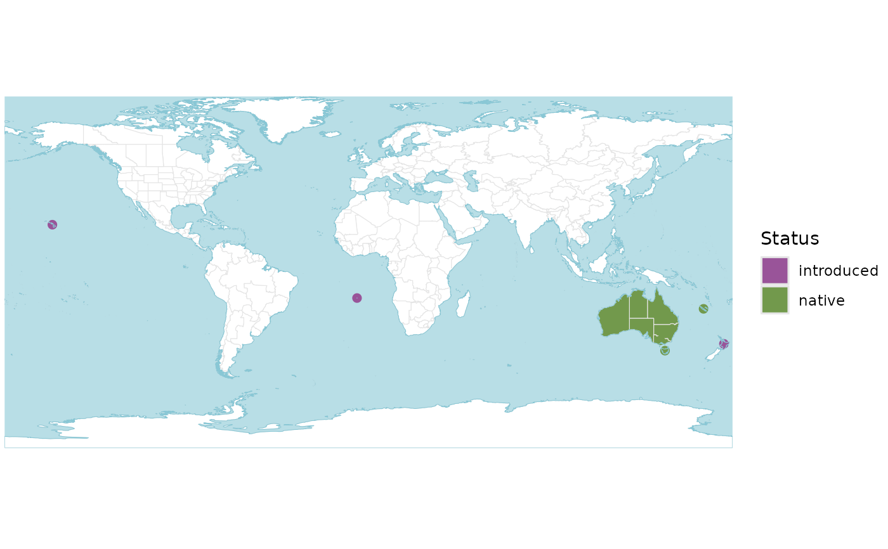

Plot distribution maps for species, genera or families
Source:R/wcvp_distribution_map.R
wcvp_distribution_map.RdPlot distribution maps for species, genera or families
Usage
wcvp_distribution_map(
range,
crop_map = FALSE,
native = TRUE,
introduced = TRUE,
extinct = TRUE,
location_doubtful = TRUE
)Arguments
- range
Simple features (
sf) data frame of the type output bywcvp_distribution().- crop_map
Logical. Crop map extent to distribution? Defaults to
FALSE.- native
Logical. Include native range? Defaults to
TRUE.- introduced
Logical. Include introduced range? Defaults to
TRUE.- extinct
Logical. Include extinct range? Defaults to
TRUE.- location_doubtful
Logical. Include occurrences that are thought to be doubtful? Defaults to
TRUE.
Value
A ggplot2::ggplot of the distribution.
Details
The colour scheme mirrors that used by Plants of the World (POWO; https://powo.science.kew.org/), where green is native, purple is introduced, red is extinct and orange is doubtful. See Examples for how to use custom colours.
Examples
# these examples require 'rWCVPdata'
if(requireNamespace("rWCVPdata")){
p <- wcvp_distribution_map(wcvp_distribution("Callitris", taxon_rank = "genus"))
p
# now only the native range, and cropped to range extent
p <- wcvp_distribution_map(wcvp_distribution("Callitris", taxon_rank = "genus"),
introduced = FALSE, crop_map = TRUE
)
p
# now with different colours
# note that this taxon only has native and introduced occurrences, so only two colours are needed
p <- wcvp_distribution_map(wcvp_distribution("Callitris", taxon_rank = "genus"))
p +
# for polygons
ggplot2::scale_fill_manual(values = c("red", "blue")) +
# for points (islands)
ggplot2::scale_colour_manual(values = c("red", "blue"))
}
#> Scale for fill is already present.
#> Adding another scale for fill, which will replace the existing scale.
#> Scale for colour is already present.
#> Adding another scale for colour, which will replace the existing scale.
